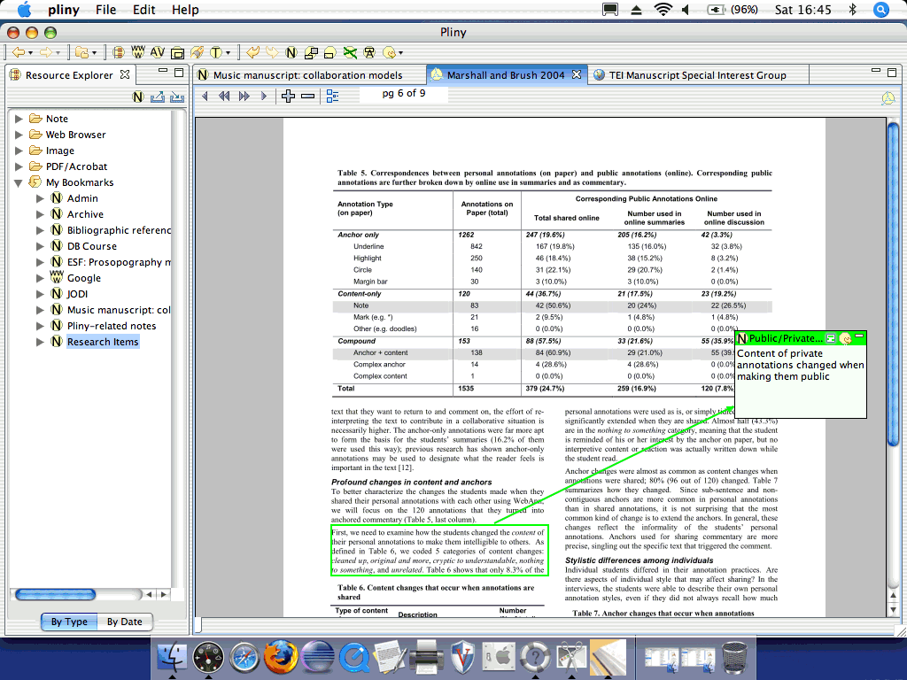

A version of Pliny is also available for the Macintosh. There, the Pliny
screen is laid out more like a conventional Macintosh application:

Note that:
- The menu for Pliny is at the top of the Macintosh screen rather than
being attached to the Pliny window itself -- this is the way that applications
on the Macintosh work.
- The screen widgets, and aspects of the screen layout might well
differ between the Macintosh and Windows version. Note, for example, that the
hierarchical list used to display Pliny's Resource Explorer uses the
Macintosh's arrowhead symbols in front of each item instead of Windows's
arrowhead symbols.
- Standard dialogue boxes (for example the "open" screen to select a
text file to import) will differ between the Macintosh and Windows systems,
since Pliny will always use the standard dialogue box provided by the host
operating system.
In the rest of these notes you will see show screenshots captured on a
Windows machine, rather than on the Macintosh. We offer apologies to the
Macintosh user who will have to translate what the images show to what s/he
sees on his/her screen.